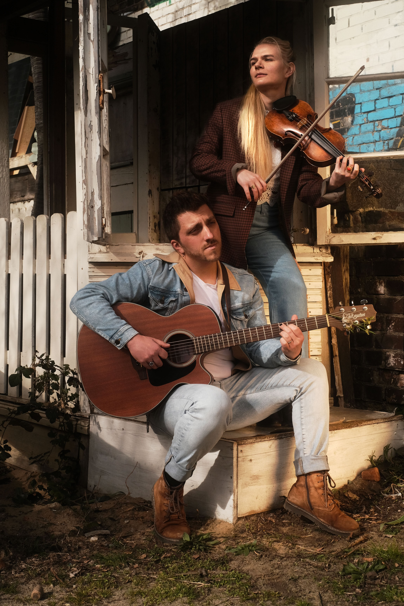
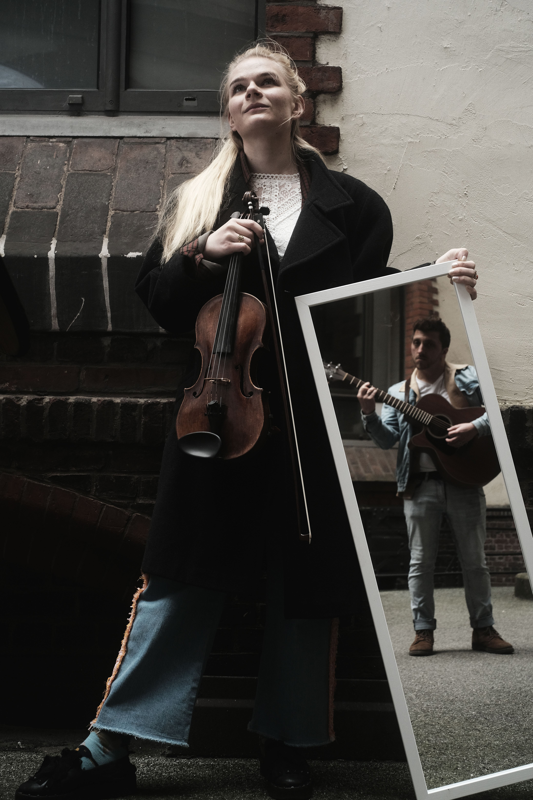

barg beginnt im folk und entfaltet sich im akustischen rock. das hamburger duo erzählt nur mit geige, gitarre und gesang von großen gedanken und kleinen wundern. ihr rau-lyrischer klang taumelt dabei zart unzärtlich über rissige harmonien. barg verbindet rohe emotion mit dem behutsamen blick in das selbst und erschafft so eine unerwartete klangwelt - gitarregeigebargmusik.
barg sind lona frießner [geige, vocals] und shaun graham [gitarre, vocals] aus hamburg und sie spielen ihre musik auf der bühne, der straße und der suche nach mehr. seit 2025 teilen sie ihre songs mit allen lauten ohren.

